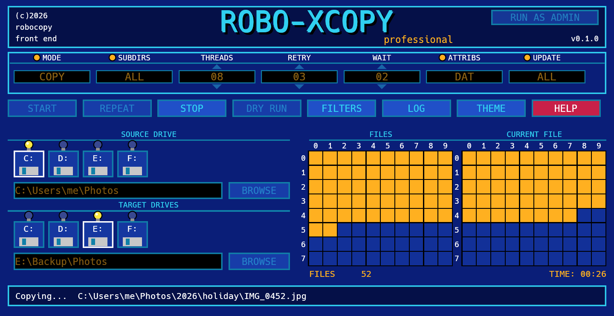
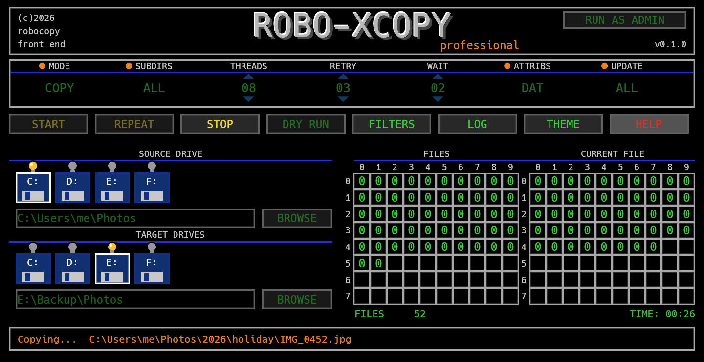

ROBO-XCOPY
A tiny, fast Windows GUI for robocopy, in the spirit of Amiga X-Copy.
Destination E:\Backup\Photos
FILES
CURRENT FILE
Why
Robocopy is the file copy and backup tool built into Windows, and it is the best one there is, but nobody remembers its switches. Robo-XCopy is a free, open-source graphical front end (GUI) for it: copy, mirror, move or back up folders from a retro Amiga X-Copy style screen, with the exact command shown every time. See the how-to for the details.
Features
- One ~5 MB
.exe. No installer, no runtime to install. - Dry run (
/L) to preview before you copy. - Mirror, move, multi-thread, retries, restartable and backup mode, excludes.
- Live progress on the classic track grids.
- Optional log file, saved wherever you choose.
- Knows when it needs administrator rights and offers to restart elevated.
- Two themes: Modern Amiga and Classic X-Copy.
- Works on any Windows language.
Screenshots


Install
Download RoboXCopy.exe from the latest release and run it. Windows only.
New here? Read the how-to.
Heads up: Mirror mode deletes files from the destination that are not in the source. Do a dry run first.
Support
Robo-XCopy is free and open source. If it saved you some time, a coffee is always welcome.